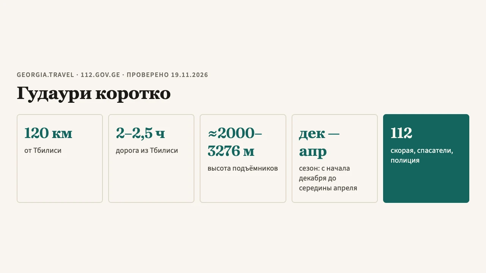
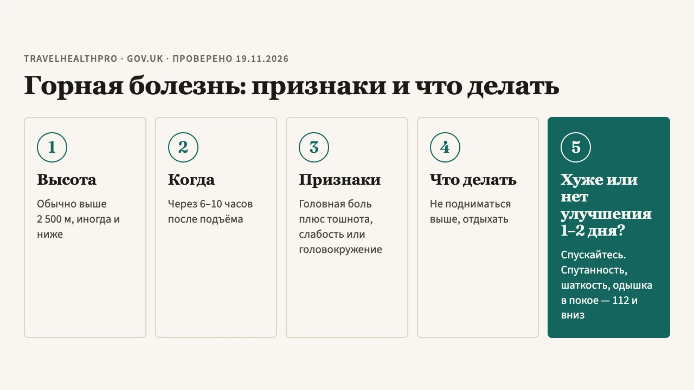
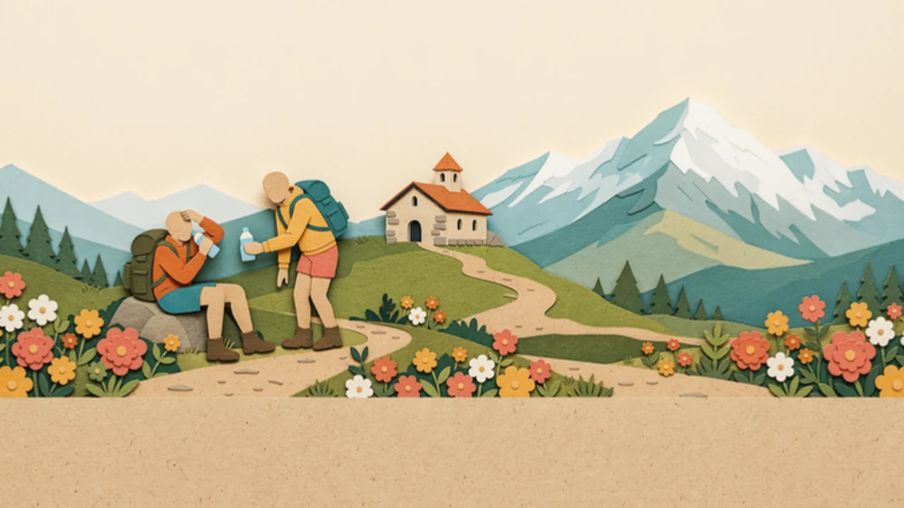

- От Тбилиси
- 120 км
- Дорога
- 2–2,5 часа
- Подъёмники
- ≈2 000–3 276 м
- Сезон
- декабрь — середина апреля
- Экстренный номер
- 112
Статья входит в справочник о медицине в Грузии.
Гудаури коротко: высота, сезон и как добраться
Курорт стоит на Военно-Грузинской дороге, кататься здесь можно всю зиму и в начале весны. Цифры ниже — со страницы Национальной администрации туризма Грузии (на английском).

Высота Гудаури
Подъёмники начинаются примерно на 2 000 м и поднимают лыжников до 3 276 м над уровнем моря. Так пишет Национальная администрация туризма. Нейросети Яндекса и Google называют другие цифры и для посёлка, и для верхней точки — мы берём официальные.
Верхние подъёмники заходят выше 2 500 м. С этой отметки, по данным TravelHealthPro, обычно начинается горная болезнь, поэтому о ней ниже отдельный раздел.
Как добраться из Тбилиси в Гудаури
Курорт в 120 км от столицы по Военно-Грузинской дороге, доехать можно за 2–2,5 часа. Поедете на маршрутке — сначала прочитайте наш материал о маршрутках в Грузии (на английском).
Зимой закладывайте запас времени. GOV.UK предупреждает: снег на высоте может перекрыть дороги и мосты, особенно в отдалённых районах.
Наш совет. Не ставьте отъезд с курорта впритык к рейсу из Тбилиси. Если дорогу закроет снег, день в запасе спасёт билет.
Сезон
Катаются здесь с начала декабря до середины апреля. Даты открытия на сезон 2026–2027 на официальной странице не указаны, их стоит уточнить ближе к поездке.
Соседний горный район — Казбеги. О нём рассказываем в путеводителе по Казбеги.
Горная болезнь в Гудаури
Риск есть, и это не наша догадка. GOV.UK прямо называет Гудаури вместе с горой Казбек и Тетнульди среди мест Грузии, где возможна горная болезнь. Сам сайт отсылает к памятке британской службы TravelHealthPro (на английском) — пересказываем её.
По памятке, риск обычно начинается выше 2 500 м. У восприимчивых людей недомогание бывает и ниже, хотя на 1 500–2 500 м это редкость.

Признаки
Симптомы приходят не сразу: обычно через 6–10 часов после подъёма выше 2 500 м. По TravelHealthPro, у человека без акклиматизации болит голова, и к головной боли добавляется хотя бы одно из списка:
- тошнота или рвота;
- пропал аппетит;
- головокружение;
- усталость или слабость.
Памятка советует считать любой новый симптом после подъёма горной болезнью, пока не доказано другое.
Что делать
Не поднимайтесь выше и отдыхайте: по TravelHealthPro, симптомы часто проходят за 1–3 дня. При необходимости можно принять обычное обезболивающее, например ибупрофен или парацетамол, а при тошноте — средство от неё. Стало хуже или за 1–2 дня не легче — спускайтесь.
Тяжёлые формы — отёк мозга и отёк лёгких — опасны для жизни. При отёке мозга, по TravelHealthPro, появляются спутанность, нарушение сознания или шаткость и плохая координация. Отёк лёгких начинается с одышки при нагрузке и сухого кашля, потом одышка бывает и в покое, и лёжа, кашель становится влажным, мокрота — с кровью. Тут срочно нужен врач и спуск вниз, в Грузии для этого звоните 112. Памятка напоминает: многие места в горах далеко от медицинской помощи.
TravelHealthPro советует набирать высоту постепенно, с днями отдыха, а с хроническим заболеванием сходить к врачу ещё дома.
Наш совет. В первые дни не спешите на самые верхние подъёмники, а головную боль в первый вечер не списывайте на солнце и усталость.

Травма на склоне: 112, патрули и спасатели
Первым делом звоните 112. Это единый номер Грузии: скорая, полиция, пожарные и спасатели. По данным службы 112, операторы говорят в том числе по-русски, а позвонить можно с телефона без SIM-карты и даже при минусе на балансе.

Что сказать оператору. Служба 112 просит назвать (на английском), где вы, что случилось, какая служба нужна, ваши имя и фамилию. Трубку не кладите, пока оператор не закончит разговор.
Наш совет. Начните с места: «Гудаури», затем склон и ближайший ориентир, например станцию подъёмника. В горах это экономит минуты.
Кто платит. Выезд скорой оплачивает государство для любого человека в Грузии, турист не исключение, — это есть в Постановлении №655 Правительства Грузии. Лечение и госпитализацию туристу государство не оплачивает.
Патрули и спасатели. МВД сообщало в 2021 году, что на склонах Гудаури, в Местиа (Тетнульди и Хацвали) и на перевале Годердзи работали лыжные патрули. На зимних курортах они с 2016 года. Вместе с ними работали горные спасатели Службы управления чрезвычайными ситуациями МВД. По словам министерства (на английском), патрульные прошли обучение и оснащены всем необходимым, чтобы помочь. Объявления о патрулях на сезон 2026–2027 на 19 ноября 2026 года мы не нашли.
Наш совет. Звоните 112 и, если патруль рядом, зовите его тоже.
Подъёмники. GOV.UK пишет, что стандарты безопасности в Грузии могут быть ниже британских, и приводит пример: в 2018 году в Гудаури сломался подъёмник, пострадали несколько человек.
Полис. Как можно скорее сообщите о травме в службу помощи, номер которой указан в вашем полисе. Там же спросите, нужно ли согласовать эвакуацию заранее: от этого может зависеть, оплатят ли её.
Как устроен вызов и что умеет приложение службы 112 — в нашем материале о скорой в Грузии (на английском).

Медпункт и больница: где лечат
Медпункт на курорте есть. Национальная администрация туризма пишет, что в Гудаури работают «полностью оборудованная медицинская станция» и служба экстренного реагирования. Адреса, часов и телефона медпункта на её странице нет. Номера из справочников и ответов нейросетей официально не подтверждены, поэтому мы их не приводим: при травме звоните 112.
За пределами Тбилиси медицинская помощь ограничена, предупреждает GOV.UK. В Тбилиси она есть, но может быть дорогой. Платить за лечение придётся по факту — вам или страховщику. Если врач направил вас в клинику, GOV.UK советует быстро сообщить об этом страховщику.
Травматолога-ортопеда в столице можно найти в каталоге врачей Тбилиси на 100doc.ge.
Фрирайд и лавины
Катание вне трасс GOV.UK называет очень опасным. Точные данные о состоянии гор, в том числе о лавинной опасности, по словам сайта, получить трудно.
Для экстремального спорта GOV.UK советует брать специализированных гидов. И предупреждает: многие полисы не оплачивают фрирайд без гида и поломку прокатного снаряжения.
Наш совет. Собрались за пределы трасс — идите с гидом. До поездки найдите в правилах полиса, где упомянуто катание вне трасс (по-английски off-piste): в покрытии или в исключениях. Не нашли — спросите страховщика письменно.
Полис и горные лыжи
Обязательный полис для въезда и полис, который платит за травму на лыжах, — не всегда одно и то же.
Что требует закон. Каждому иностранцу нужен полис здоровья и от несчастного случая от 30 000 лари на весь срок поездки, включая дни въезда и выезда. Это требование Закона Грузии о туризме и Постановления №602 Правительства Грузии. Именно лари: ИИ Google называет здесь другую валюту и ошибается. Подробнее — в разделе о полисе для въезда.
Лыжи — отдельный вопрос. О спорте в правиле въезда, как его пересказывает GOV.UK, ничего не сказано. Зато GOV.UK советует убедиться, что полис покрывает ваши занятия: если что-то случится на лыжах, в походе или в экстремальном спорте, экстренная помощь может быть ограничена. Вторая проверка, как пишет GOV.UK, — оплатит ли полис медицинскую эвакуацию.
Пример: IRAO. Возьмём правила турполиса IRAO, компании из группы Vienna Insurance Group. Пункт 9.1.22 исключает расходы на травмы при профессиональном, любительском и экстремальном спорте. Слов «лыжи» и «сноуборд» в правилах нет. Наш вывод: катание на отдыхе — тоже любительский спорт, так что травма на склоне, по нашему прочтению, может подпадать под это исключение.
Медицинскую эвакуацию IRAO оплачивает в пределах 1 000 лари и только если её заранее согласовала служба помощи, указанная в полисе.
Наш совет. До поездки откройте правила своего полиса и найдите раздел исключений. Неясно, покрыты ли лыжи и эвакуация со склона, — спросите страховщика письменно и сохраните ответ.
Частые вопросы
Какая высота в Гудаури?
Подъёмники — примерно от 2 000 до 3 276 м над уровнем моря, по данным Национальной администрации туризма Грузии.
Есть ли в Гудаури больница?
Больницы на курорте официальные источники не называют. Есть медпункт и служба экстренного реагирования, пишет georgia.travel. За пределами Тбилиси медицинская помощь ограничена, предупреждает GOV.UK. При травме звоните 112.
Что делать, если травмировался на склоне?
Звоните 112: операторы говорят по-русски, звонок проходит и без SIM-карты. Назовите место и что случилось. Если патруль рядом, зовите его тоже: МВД сообщало о лыжных патрулях и горных спасателях в Гудаури.
Бывает ли в Гудаури горная болезнь?
Бывает: GOV.UK называет курорт среди мест риска. По TravelHealthPro, симптомы появляются через 6–10 часов после подъёма: головная боль плюс тошнота, слабость или головокружение. Не поднимайтесь выше и отдыхайте, стало хуже — спускайтесь.
Покрывает ли страховка катание на лыжах?
Не всегда. Для въезда нужен полис от 30 000 лари, а о спорте правило въезда, как его пересказывает GOV.UK, не говорит. В правилах IRAO, например, травмы при любительском спорте исключены (п. 9.1.22). Проверьте исключения своего полиса до поездки.
Как добраться из Тбилиси?
120 км по Военно-Грузинской дороге, 2–2,5 часа в пути. Зимой снег может перекрыть дорогу, поэтому оставляйте запас времени до обратного рейса.
Когда сезон в Гудаури?
С начала декабря до середины апреля, по данным georgia.travel. Даты ближайшего сезона уточняйте перед поездкой.
Можно ли кататься вне трасс?
GOV.UK называет это очень опасным: точные данные о лавинной опасности получить трудно, а многие полисы не покрывают фрирайд без гида. Если едете — с гидом и с полисом, где катание вне трасс указано в покрытии, а не в исключениях.
Источники
- georgia.travel: Гудаури зимой — подъёмники, дорога из Тбилиси, сезон, медпункт (на английском)
- GOV.UK: здоровье в Грузии — места риска горной болезни, медпомощь вне Тбилиси, эвакуация (на английском)
- GOV.UK: безопасность — катание вне трасс, гиды, подъёмник в 2018 году, снег на дорогах (на английском)
- GOV.UK: правила въезда — полис на весь срок поездки (на английском)
- TravelHealthPro: памятка Altitude illness — признаки и что делать (на английском)
- МВД Грузии: лыжные патрули и горные спасатели на зимних курортах, 2021 год (на английском)
- Служба 112: языки операторов, звонок без SIM-карты
- Служба 112: что сказать оператору (на английском)
- Matsne: Постановление №655 Правительства Грузии — оплата выезда скорой (на грузинском)
- Matsne: требование о полисе для иностранцев при въезде (на грузинском)
- IRAO: правила турполиса «Incoming Tourists And Domestic Tour Insurance. Essential Terms» — п. 9.1.22, п. 9.1.13, таблица 5.1 (на английском)
Это справочная информация, а не медицинская консультация: лечение назначает врач. Проверено 19 ноября 2026 года.